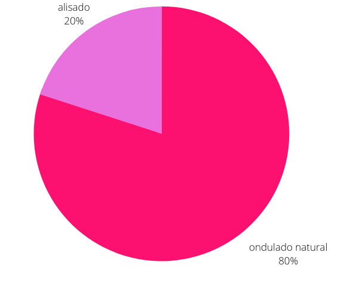
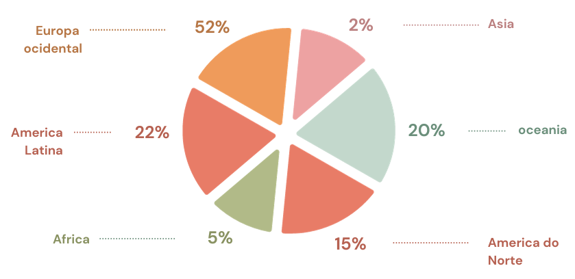

1-frizz
2-secura
3-pontas duplas
4-quebra
1- DevaCurl,
2- SheaMoisture
3- Ouidad
4- Briogeo
5- Cantu

1- Corte em Camadas
2- Corte Longo com Franja
3- Bob ou Long Bob (Lob)
4- Corte Pixie
5- Corte Shag

shampoo e Condicionador Específicos: Muitas pessoas com cabelos ondulados optam por usar shampoos e condicionadores projetados para cabelos ondulados. Esses produtos costumam conter ingredientes que ajudam a controlar o frizz, definir as ondas e manter a hidratação. Produtos Anti-Frizz: O frizz é frequentemente uma preocupação para quem tem cabelos ondulados. Portanto, produtos anti-frizz, como soros, cremes e sprays, são comuns nas compras para manter os fios no lugar. Leave-in Conditioners: Leave-in conditioners são populares entre pessoas com cabelos ondulados, pois ajudam a manter a hidratação e a suavidade ao longo do dia. Modeladores de Ondas: Para aprimorar as ondas naturais, muitas pessoas usam modeladores de ondas, como géis, mousses ou sprays de texturização. Pentes de Dentes Largos: Para evitar a quebra dos fios e manter a estrutura ondulada, é comum usar pentes de dentes largos em vez de escovas. Tratamentos Capilares Específicos: Algumas pessoas com cabelos ondulados recorrem a tratamentos capilares mais intensivos, como máscaras de hidratação profunda, para manter a saúde dos fios.